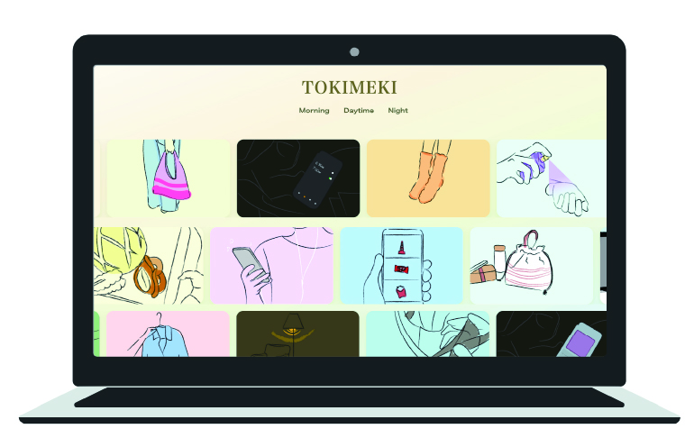

TOKIMEKI

これは何？
生活習慣を整えるための趣味習慣を提案するWEBサイト
背景と目的
・スマートフォンの普及や働き方の多様化により、ONとOFFの切り替えが難しくなっている。・朝・昼・夜という時間軸に注目し、それぞれの時間に合わせた“すぐ始められる趣味”を提案する
コンセプト・ターゲット
コンセプトはシンプルで親しみやすい
ターゲットは10〜30代女性
制作ツール
HTML / CSS / Illustrator
制作期間
大学3年 後期 (2025.9月〜12月)